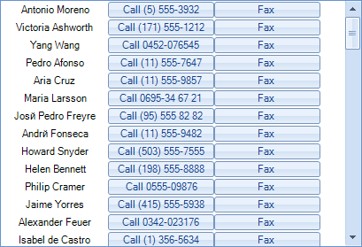
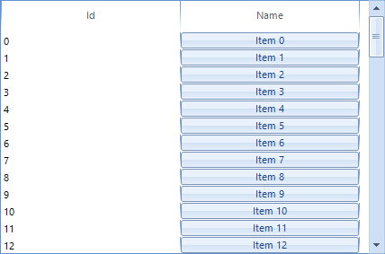

Custom items
RadListView allows you to create and use your own custom visual items. This article demonstrates how to achieve it.
Custom items in ListView ViewType
This can be done by making use of the VisualItemCreating event. The following
example demonstrates creating a visual item with two buttons in it.

First let's create a custom visual item by inheriting from the SimpleListViewVisualItem class:
[C#] Creating custom item
public class MyCustomVisualItem : SimpleListViewVisualItem
{
private RadButtonElement buttonElement1;
private RadButtonElement buttonElement2;
private LightVisualElement contentElement;
private StackLayoutPanel stackLayout;
protected override void CreateChildElements()
{
base.CreateChildElements();
this.stackLayout = new StackLayoutPanel();
this.stackLayout.Orientation = Orientation.Horizontal;
this.stackLayout.EqualChildrenWidth = true;
this.stackLayout.ShouldHandleMouseInput = false;
this.stackLayout.NotifyParentOnMouseInput = true;
this.contentElement = new LightVisualElement();
this.contentElement.StretchHorizontally = true;
this.contentElement.MinSize = new Size(120, 0);
this.contentElement.ShouldHandleMouseInput = false;
this.contentElement.NotifyParentOnMouseInput = true;
this.stackLayout.Children.Add(this.contentElement);
this.buttonElement1 = new RadButtonElement();
this.buttonElement1.Text = "Button1";
this.stackLayout.Children.Add(this.buttonElement1);
this.buttonElement2 = new RadButtonElement();
this.buttonElement2.Text = "Button2";
this.stackLayout.Children.Add(this.buttonElement2);
this.Children.Add(this.stackLayout);
}
protected override void SynchronizeProperties()
{
base.SynchronizeProperties();
this.Text = "";
this.contentElement.Text = Convert.ToString(this.Data["Name"]);
this.buttonElement1.Text = "Call " + Convert.ToString(this.Data["Phone"]);
this.buttonElement2.Text = "Fax " + Convert.ToString(this.Data["Fax"]);
}
protected override Type ThemeEffectiveType
{
get
{
return typeof(SimpleListViewVisualItem);
}
}
}
[VB.NET] Creating custom item
Public Class MyCustomVisualItem
Inherits SimpleListViewVisualItem
Private buttonElement1 As RadButtonElement
Private buttonElement2 As RadButtonElement
Private contentElement As LightVisualElement
Private stackLayout As StackLayoutPanel
Protected Overrides Sub CreateChildElements()
MyBase.CreateChildElements()
Me.stackLayout = New StackLayoutPanel()
Me.stackLayout.Orientation = Orientation.Horizontal
Me.stackLayout.EqualChildrenWidth = True
Me.stackLayout.ShouldHandleMouseInput = False
Me.stackLayout.NotifyParentOnMouseInput = True
Me.contentElement = New LightVisualElement()
Me.contentElement.StretchHorizontally = True
Me.contentElement.MinSize = New Size(120, 0)
Me.contentElement.ShouldHandleMouseInput = False
Me.contentElement.NotifyParentOnMouseInput = True
Me.stackLayout.Children.Add(Me.contentElement)
Me.buttonElement1 = New RadButtonElement()
Me.buttonElement1.Text = "Button1"
Me.stackLayout.Children.Add(Me.buttonElement1)
Me.buttonElement2 = New RadButtonElement()
Me.buttonElement2.Text = "Button2"
Me.stackLayout.Children.Add(Me.buttonElement2)
Me.Children.Add(Me.stackLayout)
End Sub
Protected Overrides Sub SynchronizeProperties()
MyBase.SynchronizeProperties()
Me.Text = ""
Me.contentElement.Text = Convert.ToString(Me.Data("Name"))
Me.buttonElement1.Text = "Call " + Convert.ToString(Me.Data("Phone"))
Me.buttonElement2.Text = "Fax " + Convert.ToString(Me.Data("Fax"))
End Sub
Protected Overrides ReadOnly Property ThemeEffectiveType() As Type
Get
Return GetType(SimpleListViewVisualItem)
End Get
End Property
End Class
To use the newly created items, you should handle the VisualItemCreating event
as shown below:
[C#] Use the custom item
void radListView1_VisualItemCreating(object sender, ListViewVisualItemCreatingEventArgs e)
{
e.VisualItem = new MyCustomVisualItem();
}
[VB.NET] Use the custom item
Private Sub radListView1_VisualItemCreating(ByVal sender As Object, ByVal e As ListViewVisualItemCreatingEventArgs)
e.VisualItem = New MyCustomVisualItem()
End Sub
Custom items in DetailsView ViewType
Since the DetailsView provides a grid-like interface, it displays a cell for each data field. In order to create
custom cells you need to subscribe to the CellCreating event and replace the default DetailListViewDataCellElement
with your own cell implementation.

First let's populate the RadListView with items and set its ViewType property to DetailsView:
[C#]
radListView1.ViewType = ListViewType.DetailsView;
DataTable dt = new DataTable();
dt.Columns.Add("Id", typeof(int));
dt.Columns.Add("Name", typeof(string));
for (int i = 0; i < 50; i++)
{
dt.Rows.Add(i, "Item " + i);
}
this.radListView1.DataSource = dt;
[VB.NET]
RadListView1.ViewType = ListViewType.DetailsView
Dim dt As New DataTable()
dt.Columns.Add("Id", GetType(Integer))
dt.Columns.Add("Name", GetType(String))
For i As Integer = 0 To 49
dt.Rows.Add(i, "Item " & i.ToString())
Next
Me.RadListView1.DataSource = dt
Now let`s create our custom cell element containing a RadButtonElement. Additionally,
we should inherit the DetailListViewDataCellElement class:
[C#]
public class CustomDetailListViewDataCellElement : DetailListViewDataCellElement
{
private RadButtonElement button;
public CustomDetailListViewDataCellElement(DetailListViewVisualItem owner,
ListViewDetailColumn column)
: base(owner, column)
{
}
protected override void CreateChildElements()
{
base.CreateChildElements();
this.button = new RadButtonElement();
this.Children.Add(this.button);
}
protected override Type ThemeEffectiveType
{
get
{
return typeof(DetailListViewHeaderCellElement);
}
}
public override void Synchronize()
{
base.Synchronize();
this.Text = "";
DataRowView rowView = this.Row.DataBoundItem as DataRowView;
this.button.Text = rowView.Row["Name"].ToString();
}
public override bool IsCompatible(ListViewDetailColumn data, object context)
{
if (data.Name != "Name")
{
return false;
}
return base.IsCompatible(data, context);
}
}
[VB.NET]
Public Class CustomDetailListViewDataCellElement
Inherits DetailListViewDataCellElement
Private button As RadButtonElement
Public Sub New(owner As DetailListViewVisualItem, column As ListViewDetailColumn)
MyBase.New(owner, column)
End Sub
Protected Overrides Sub CreateChildElements()
MyBase.CreateChildElements()
Me.button = New RadButtonElement()
Me.Children.Add(Me.button)
End Sub
Protected Overrides ReadOnly Property ThemeEffectiveType() As Type
Get
Return GetType(DetailListViewHeaderCellElement)
End Get
End Property
Public Overrides Sub Synchronize()
MyBase.Synchronize()
Me.Text = ""
Dim rowView As DataRowView = TryCast(Me.Row.DataBoundItem, DataRowView)
Me.button.Text = rowView.Row("Name").ToString()
End Sub
Public Overrides Function IsCompatible(data As ListViewDetailColumn, context As Object) As Boolean
If data.Name <> "Name" Then
Return False
End If
Return MyBase.IsCompatible(data, context)
End Function
End Class
Finally, we should handle the CellCreating event and substitute the default cell element with our own:
[C#]
private void radListView1_CellCreating(object sender, ListViewCellElementCreatingEventArgs e)
{
DetailListViewDataCellElement cell = e.CellElement as DetailListViewDataCellElement;
if (cell != null && cell.Data.Name == "Name")
{
e.CellElement = new CustomDetailListViewDataCellElement(cell.RowElement, e.CellElement.Data);
}
}
[VB.NET]
Private Sub radListView1_CellCreating(sender As Object, e As ListViewCellElementCreatingEventArgs)
Dim cell As DetailListViewDataCellElement = TryCast(e.CellElement, DetailListViewDataCellElement)
If cell IsNot Nothing AndAlso cell.Data.Name = "Name" Then
e.CellElement = New CustomDetailListViewDataCellElement(cell.RowElement, e.CellElement.Data)
End If
End Sub